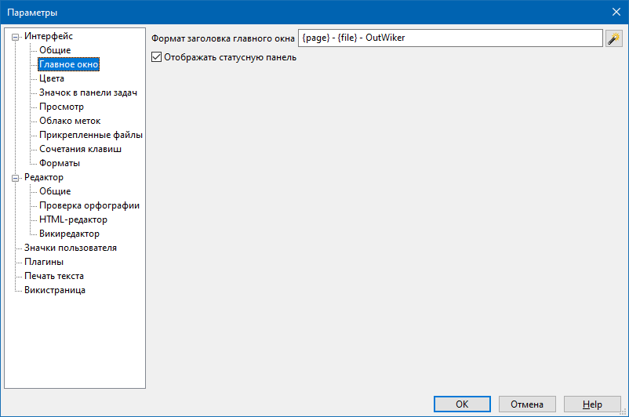

Интерфейс - Главное окно

Поле ввода Формат заголовка главного окна позволяет установить, как должен выглядеть заголовок главного окна программы. В этом поле можно использовать следующие макросы подстановки:
- {page} - заголовок выбранной в данный момент страницы.
- {subpath} - относительный путь до выбранной в данный момент страницы относительно корня дерева заметок.
- {file} - имя папки, в которой хранятся заметки.
С помощью переключателя Отображать статусную панель можно скрывать и показывать панель, расположенную в самом низу главного окна программы.